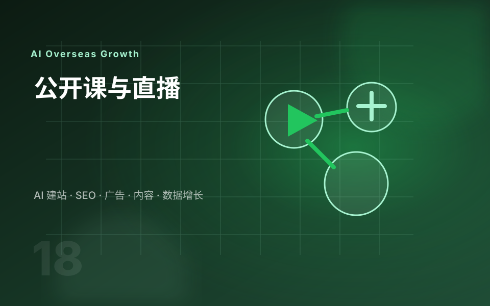

公司主页定位
明确行业、产品、服务市场、差异化能力和信任背书，让陌生访客快速判断你是谁。
LinkedIn 更适合 B2B 品牌建立可信度，而不是一上来就硬卖。参考 LinkedIn 官方 B2B 营销框架，我会围绕目标客户、行业观点、公司主页、员工账号、内容节奏和线索跟进来设计运营体系。
B2B 客户在 LinkedIn 上更关注行业洞察、解决方案、真实经验和专业人员。公司主页和个人账号应该互相配合，而不是各发各的。
明确行业、产品、服务市场、差异化能力和信任背书，让陌生访客快速判断你是谁。
用老板、销售、工程师或运营账号输出不同角度内容，提升真实感和触达面。
每类内容都连接网站页面、项目经验、下载资料、邮件跟进或私信话术。

我把这些权威资料转成更适合 B2B 外贸企业的服务表达：先明确目标和受众，再规划内容、互动、广告、数据和线索承接。
对外贸企业来说，社媒的价值不是单纯涨粉，而是让潜在客户持续看见你、理解你、信任你，并能回到网站完成咨询。
把公司主页和几个核心人员账号发给我，我会帮你判断定位、内容支柱和线索承接方式。